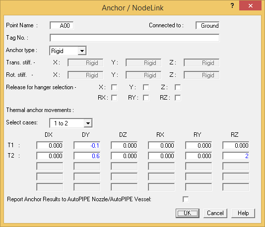

Assigning Thermal Displacements to the Anchors
- Double-click the Anchor at point A00 to modify it.
| Note: |
In most cases, simply double-click any component to open its associated modification dialog. Another method would be to select the component, then select the associated command from the Modify tab. |
- Assume that the anchor at A00 represents a connection to a vessel that experiences thermal growth. Instead of building the entire vessel using pipe elements, we will specify thermal displacements for each thermal load case in the Anchor/NodeLink dialog. Input the following values in the Thermal Anchor Movement section of the dialog:
| T1 DY | - 0.1 {-2.5} | (inches) {mm} | |
| T2 DY | 0.6 {15.0} | (inches) {mm} | |
| T2 RZ | 2 | (degrees rotation) | |
|
Note:
|
Imposed displacements associated with load cases other than thermal can be input using the Insert > Xtra Data > Imposed Displacement command. This feature enables the user to simulate anchor and support displacements for equipment settlement or displacement due to wind, seismic, or fluid transient loads. |
||

- Press OK to close the dialog and apply the loads.